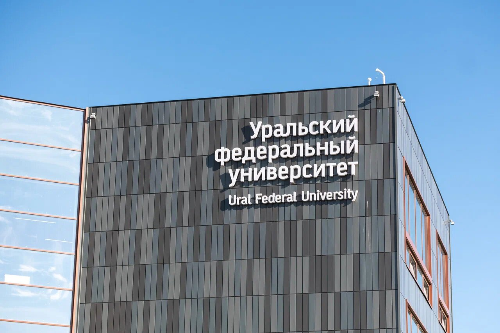

Поступление в УрФУ
Выберите уровень: шаги, сроки, документы и контакты приёмной комиссии собраны на одной странице.
Как поступить
Календарь приёма
Документы и сервисы

Остались вопросы?
Сначала проверьте вопросы и ответы приёмной комиссии. Если ответа там нет, спросите помощника, напишите или позвоните.
8 800 100-50-44
Контакт-центр, звонок по России бесплатный
+7 (343) 375-44-44
Телефон в Екатеринбурге